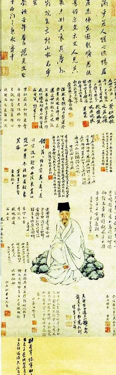
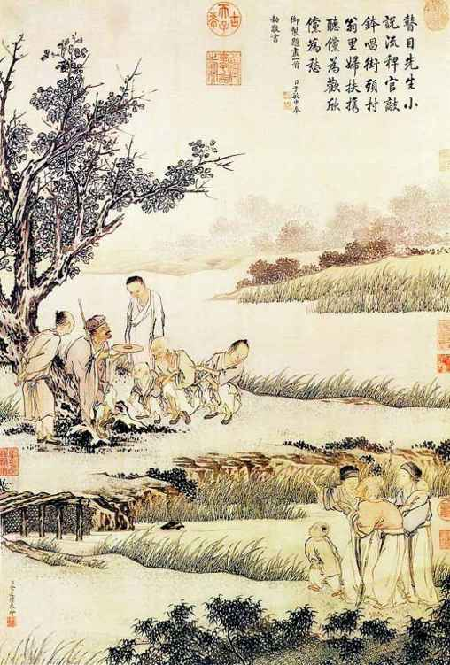
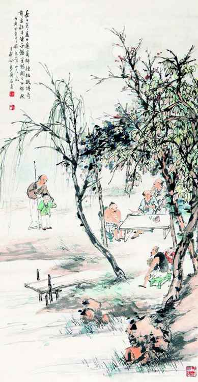
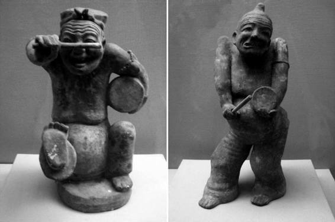

当时，以说书饮誉一方的，不止柳氏一人，连吴梅村那篇为他大张其目的传记也提到：
柳生之技，其先后江湖间者：广陵张樵、陈思，姑苏吴逸，与柳生，四人者各名其家。[6]
说明至少还有三位说书名家，当时可以并驾齐驱。实际还不止此，比如《扬州画舫录》，又提到另外两个人：
评话盛于江南，如柳敬亭、孔云霄、韩圭湖诸人。[7]
可是，张樵、陈思，吴逸、孔云霄、韩圭湖等，日后名头休说比肩柳敬亭，简直已消失得无影无踪。同为知名艺人，柳敬亭声望历久弥坚，旁人却都遭遗忘，这似乎不能简单归结于技艺。
相反，我们从史料得到的印象是，柳敬亭后来已被神化，成为供膜拜的对象，而其情形，是明显超出正常的聆艺状态与需要的。且看亲历其说书现场的张岱的描述：
主人必屏息静坐，倾耳听之，彼方掉舌，稍见下人呫哔耳语，听者欠伸有倦色，辄不言，故不得强。[8]
可以注意，单论技艺本身，柳敬亭亦不足令人全神贯注。他的听众，照样有交头接耳，乃至打呵欠、犯倦的。这并非他不够好，但那种好，也还在常识以内，并未到口坠天花、令人如闻纶音的地步。别的说书家表演时遇到的困扰，他也还是会遇到。但普通说书家须仰望的是，他无须掩饰自己的情绪，可以耍大牌、对听众甩脸色。在奉“各位看官”为衣食父母的古代，这种态度，是相当过分以至有乖常理的。不必用艺术地位和声望来解释，以我们知道的论，旧时代即使荣宠如谭鑫培，也不敢（实则不会）这样耍态度。把观众听众“伺候”好，是艺人打小形成的习惯和本能。然而柳敬亭却逾越在外，在我们无法视为正常，于是对其原因，自也不能做通常的思索和求取。
然而，随着时间推移，他这派头居然有增无减——由明入清，他的出演根本不能目为登台献艺，俨然上升为一种仪式；每出场，如尊神降临。晚生的王渔洋，终于赶上瞻仰一回，据他说：
所至逢迎恐后，预为设几焚香，瀹芥片，置壶一、杯一。比至，径踞右席。说评话，才一段而止，人亦不复强之也。[9]
这哪里是说书和听书，分明迎神拜神。此时之柳敬亭既非靠手艺吃饭的表演家，蜂拥而至的听众，目的也不关乎饱其耳福——台上是供瞻仰，台下则俱为瞻仰者——大家就这样共同完成一个与说书已无太多关系的仪式。
明显地，这情形背后，有一套奇特的、极富魅力与魔力的话语支撑。而出于庸常的心理，类似话语总是让人趋之若鹜。偶尔的例外，只有当那套话语对某人本来不起作用，于是，他便成为那种场合的冷眼旁观者，而留下与众不同的观察。
王士禛似乎就是如此。关于那次南京听书经历，他给出的评语是：“试其技，与市井之辈无异。”[10]在已将柳敬亭神化的漫天议论中，这看法极为孤立。它当即就遭到柳敬亭崇拜者（康发祥、夏荃等）的痛斥，几百年后也如此，当代几位柳敬亭传记的作者更是借别的题目加以发挥。如《柳敬亭考传》以“新贵谰言”看待王评，称他为“满清的宠儿”，借此撤销他观点的正当性。其实呢，王士禛只不过是谈了谈一次听书的感受而已。书中还揣摸王士禛心事，说他“少年得志，凌烁一时”，而“柳敬亭曾是笑傲公侯，平视卿相的人物”，未把小小的扬州推官放在眼里，“以致引起王士禛的不满”，“妄加贬辞”。[11]其实，在那时，扬州的推官贬抑某说书先生无“妄”可言，反倒是推官无法理解众多名卿为说书先生而倾倒，比较正常。

柳敬亭像（存疑）及局部
此画现藏德国某氏，2012年6 月3 日《泰州晚报》报道为明末曾鲸所绘。曾鲸确曾为柳绘像，张岱《柳麻子说书》诗句：“波臣写照简叔画”，波臣即曾鲸表字。辨本画，有三点颇合：一、上方为范景文题辞，柳名声大振，正仗范氏；二、右下落款确为曾鲸；三、遍邀文人墨客，写满题辞，也像柳敬亭之所为。然画中诸多题赠显示，画的主人表字“文若”，是“盟社”中人，而以我们知道的，历来（包括吴伟业、钱谦益等）都对柳敬亭直呼其名，说明他有名无字。此外尚有别的疑点，如人物年龄等。

《说书图》 清•金廷标绘
金廷标，乾隆宫廷画家。本画是典型的“奉旨而作”——乾隆写了首“御诗”，即大学士于敏中“敬书”于画面右上者：“瞽目先生小说流，稗官敲钵唱街头。村翁里妇扶携听，傥为欢欣傥为愁。”看来，乾隆皇帝也是书迷。

《浓荫说书图》 清末民初•金寿石绘
夏日乡村一景，盲人说书者正由童子牵引，向树下纳凉的几位村夫走来。从前，农村多以听书消暑，这时说书人便会走村串庄。

汉代鼓书陶俑
两件陶俑，决然一流的艺术品。这样浸透了世俗人性与生活气息的作品，纪元前后大概只能在中国见到。它的美妙，固得之陶艺家，但也证明汉代说书表演已登鼎盛。说书人神态身心的无羁放恣，至今观之仍足倾倒。
对我们来说，有关柳敬亭说书技艺的具体褒贬是不必在意的，因为好与坏本来见仁见智，是评价、不是事实。什么是事实呢？王士禛所记述的柳敬亭说书的排场、派头和经过，是事实。我们在注意这些东西。而我看到这样的记述时所形成的反应是：这人已不是说书家，是一个偶像。